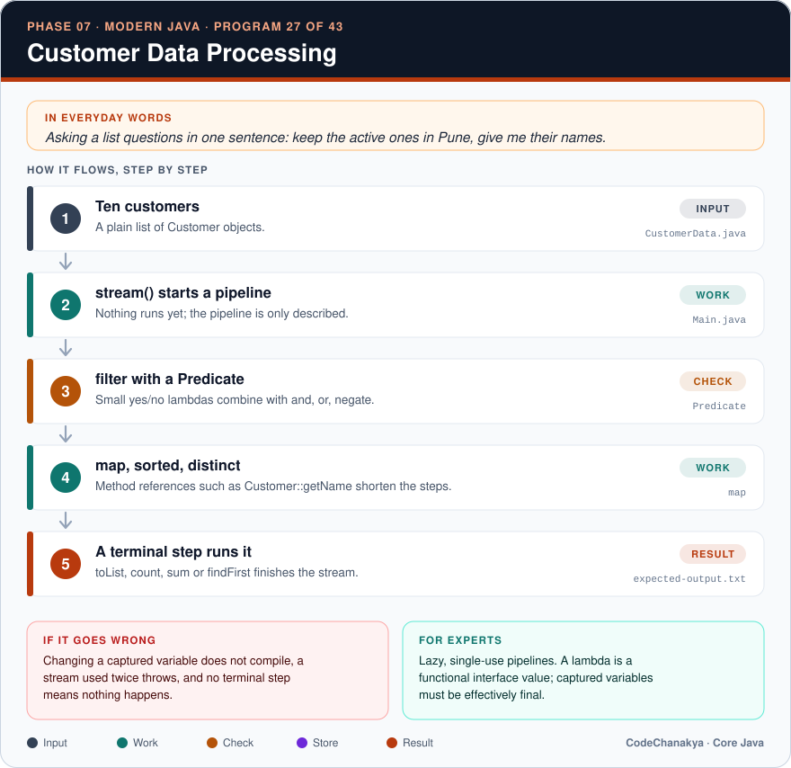

Phase 07 · Modern Java · Program 27 of 43
Customer Data Processing
The problem
A marketing team keeps a list of customers and asks a new question every day: who is active in Pune, who spends most, which email domains do we have. Each question used to mean another loop.
Lambdas pass small pieces of behaviour around as values, and a stream pipeline says what you want instead of how to loop. Streams are lazy and can be used only once.
See the flow
The whole program as one picture. Read it top to bottom; the colour of each card says what kind of step it is.


If you are new to coding
Asking a list questions in one sentence: keep the active ones in Pune, give me their names.
If you are learning
Follow the numbered cards from top to bottom. Open the file named on each card, run the program, and match its output to the last card.
If you are experienced
Lazy, single-use pipelines. A lambda is a functional interface value; captured variables must be effectively final.
Text version of the flow
- Ten customers (input): A plain list of Customer objects.
- stream() starts a pipeline (work): Nothing runs yet; the pipeline is only described.
- filter with a Predicate (check): Small yes/no lambdas combine with and, or, negate.
- map, sorted, distinct (work): Method references such as Customer::getName shorten the steps.
- A terminal step runs it (result): toList, count, sum or findFirst finishes the stream.
Read in this order
- 1Customer.java, Discount.javaAn ordinary class, and your own functional interface.
- 2CustomerData.javaTen sample customers.
- 3Main.javaEleven short sections, from loop versus stream to laziness.
The code
package com.codechanakya.customerdata; import java.math.BigDecimal; /** * A rule that turns an amount into a discounted amount. * * An interface with exactly one abstract method is a "functional interface", and a lambda can * stand in for it. The annotation is optional, but it makes the compiler refuse a second * abstract method, so nobody breaks every lambda that uses it by accident. */ @FunctionalInterface public interface Discount { BigDecimal apply(BigDecimal amount); /** A default method is fine: it does not count as the one abstract method. */ default Discount then(Discount next) { return amount -> next.apply(apply(amount)); } }
package com.codechanakya.customerdata; import java.math.BigDecimal; import java.math.RoundingMode; import java.util.ArrayList; import java.util.Comparator; import java.util.IntSummaryStatistics; import java.util.List; import java.util.function.Consumer; import java.util.function.Function; import java.util.function.Predicate; import java.util.function.Supplier; import java.util.stream.Stream; public class Main { public static void main(String[] args) { List<Customer> customers = CustomerData.sample(); System.out.println("--- The same question, a loop and a stream ---"); System.out.println("Names of active customers in Pune:"); List<String> byLoop = new ArrayList<>(); for (Customer customer : customers) { if (customer.isActive() && customer.getCity().equals("Pune")) { byLoop.add(customer.getName()); } } System.out.println(" loop : " + byLoop); List<String> byStream = customers.stream() .filter(Customer::isActive) .filter(customer -> customer.getCity().equals("Pune")) .map(Customer::getName) .toList(); System.out.println(" stream: " + byStream); System.out.println(); System.out.println("--- Predicate: a yes/no question, as a value ---"); Predicate<Customer> active = Customer::isActive; Predicate<Customer> bigSpender = customer -> customer.getTotalSpent().compareTo(new BigDecimal("10000")) >= 0; Predicate<Customer> inKochi = customer -> customer.getCity().equals("Kochi"); System.out.println(" Active big spenders : " + names(customers, active.and(bigSpender))); System.out.println(" Inactive or in Kochi: " + names(customers, active.negate().or(inKochi))); System.out.println(" Test one customer : " + bigSpender.test(customers.get(2))); System.out.println(); System.out.println("--- Function: turn one thing into another ---"); Function<Customer, String> label = customer -> customer.getName() + " <" + customer.getEmail() + ">"; Function<String, String> shout = String::toUpperCase; System.out.println(" " + label.apply(customers.get(0))); System.out.println(" " + label.andThen(shout).apply(customers.get(1))); System.out.println(); System.out.println("--- Consumer and Supplier ---"); Consumer<Customer> greet = customer -> System.out.println(" Hello, " + customer.getName().split(" ")[0] + "!"); greet.accept(customers.get(4)); Supplier<List<String>> newList = ArrayList::new; // a recipe for making an empty list List<String> fresh = newList.get(); fresh.add("empty list made on demand"); System.out.println(" " + fresh); System.out.println(); System.out.println("--- Sorting with a Comparator ---"); System.out.println(" Top 3 spenders:"); customers.stream() .sorted(Comparator.comparing(Customer::getTotalSpent).reversed()) .limit(3) .forEach(customer -> System.out.println(" " + customer)); System.out.println(" Youngest first, then by name: " + customers.stream() .sorted(Comparator.comparingInt(Customer::getAge).thenComparing(Customer::getName)) .limit(4).map(Customer::getName).toList()); System.out.println(); System.out.println("--- Pipelines: filter, map, distinct, sorted ---"); System.out.println(" Cities, sorted, no repeats: " + customers.stream() .map(Customer::getCity).distinct().sorted().toList()); System.out.println(" Email domains : " + customers.stream() .map(Customer::getEmailDomain).distinct().sorted().toList()); System.out.println(" How many are active : " + customers.stream().filter(Customer::isActive).count()); System.out.println(); System.out.println("--- Questions with a yes or no answer ---"); System.out.println(" Anyone over 55? " + customers.stream().anyMatch(c -> c.getAge() > 55)); System.out.println(" Everyone spent something? " + customers.stream() .allMatch(c -> c.getTotalSpent().signum() > 0)); System.out.println(" Nobody under 18? " + customers.stream().noneMatch(c -> c.getAge() < 18)); System.out.println(); System.out.println("--- Adding things up ---"); BigDecimal total = customers.stream() .map(Customer::getTotalSpent) .reduce(BigDecimal.ZERO, BigDecimal::add); System.out.println(" Total spent: " + total); System.out.println(" Average per customer: " + total.divide(BigDecimal.valueOf(customers.size()), 2, RoundingMode.HALF_UP)); IntSummaryStatistics ages = customers.stream().mapToInt(Customer::getAge).summaryStatistics(); System.out.println(" Ages: min " + ages.getMin() + ", max " + ages.getMax() + ", average " + ages.getAverage() + ", count " + ages.getCount()); System.out.println(); System.out.println("--- Your own functional interface ---"); Discount tenPercent = amount -> amount.multiply(new BigDecimal("0.90")).setScale(2, RoundingMode.HALF_UP); BigDecimal fiftyOff = new BigDecimal("50.00"); Discount voucher = amount -> amount.subtract(fiftyOff).max(BigDecimal.ZERO); BigDecimal basket = new BigDecimal("400.00"); System.out.println(" Basket " + basket + ": 10 percent -> " + tenPercent.apply(basket) + ", voucher -> " + voucher.apply(basket) + ", both -> " + tenPercent.then(voucher).apply(basket)); System.out.println(); System.out.println("--- Changing a list in place ---"); List<String> tags = new ArrayList<>(List.of("vip", "new", "pune", "new")); tags.replaceAll(String::toUpperCase); tags.removeIf(tag -> tag.equals("NEW")); System.out.println(" " + tags); System.out.println(); System.out.println("--- Streams are lazy, and used once ---"); Stream<String> lazy = customers.stream() .filter(c -> { System.out.println(" checking " + c.getName()); return c.getAge() > 30; }) .map(Customer::getName); System.out.println(" Nothing has been checked yet. Asking for the first match:"); System.out.println(" First over 30: " + lazy.findFirst().orElse("nobody")); try { lazy.count(); } catch (IllegalStateException e) { System.out.println(" Using the same stream again: " + e.getClass().getSimpleName()); } } /** Names of the customers that pass a test. The test arrives as a parameter, which is what lambdas are for. */ private static List<String> names(List<Customer> customers, Predicate<Customer> test) { return customers.stream().filter(test).map(Customer::getName).toList(); } }
Only the key files are shown. The rest are in the repository.
Run it
$ ./run.sh --check
--- The same question, a loop and a stream ---
Names of active customers in Pune:
loop : [Rahul Verma, Zoya Khan]
stream: [Rahul Verma, Zoya Khan]
--- Predicate: a yes/no question, as a value ---
Active big spenders : [Asha Menon, Meera Iyer, Zoya Khan]
Inactive or in Kochi: [Asha Menon, Kiran Rao, Imran Sheikh, Neha Joshi, Leela Nair]
Test one customer : true
--- Function: turn one thing into another ---
Asha Menon <asha@example.com>
RAHUL VERMA <RAHUL@MAIL.ORG>
--- Consumer and Supplier ---
Hello, Dev!
[empty list made on demand]
--- Sorting with a Comparator ---
Top 3 spenders:
Meera Iyer (Chennai, 41, 30500.00)
Zoya Khan (Pune, 36, 19800.00)
Asha Menon (Kochi, 34, 12500.00)
Youngest first, then by name: [Dev Patel, Rahul Verma, Farah Siddiqui, Neha Joshi]
--- Pipelines: filter, map, distinct, sorted ---
Cities, sorted, no repeats: [Chennai, Kochi, Mumbai, Pune]
Email domains : [corp.example.net, example.com, mail.org]
How many are active : 7
--- Questions with a yes or no answer ---
Anyone over 55? true
Everyone spent something? false
Nobody under 18? true
--- Adding things up ---
Total spent: 95051.25
Average per customer: 9505.13
Ages: min 23, max 60, average 37.9, count 10
--- Your own functional interface ---
Basket 400.00: 10 percent -> 360.00, voucher -> 350.00, both -> 310.00
--- Changing a list in place ---
[VIP, PUNE]
--- Streams are lazy, and used once ---
Nothing has been checked yet. Asking for the first match:
checking Asha Menon
First over 30: Asha Menon
Using the same stream again: IllegalStateException
OK: output matches expected-output.txt
This is the real output from OpenJDK 21.0.13 on Linux. It has not yet been run on Java 25, Windows or macOS.
Try it yourself
- BeginnerNames of customers over 40.
- BeginnerEmails of inactive customers.
- BeginnerCount customers in Pune.
- IntermediateWrite inCity() returning a Predicate.
- IntermediateA Discount that caps the amount.
- ChallengeA generic select(List, Predicate).
Hints and solutions are in the exercises and solutions folders. Try first.
Break it on purpose
Three files: changing a captured variable, reusing a stream, and a pipeline with no terminal step. The README in the broken folder explains each one.